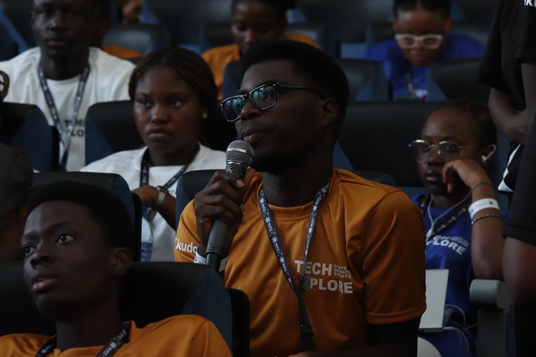
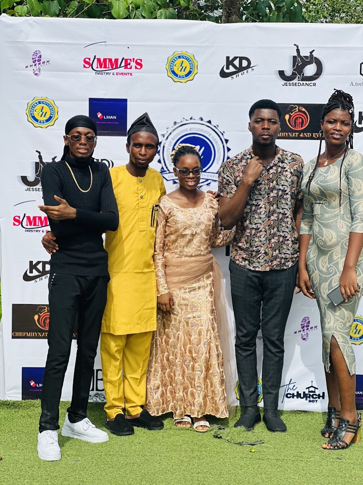

Ibrahim Michael
I, Ibrahim Michael Oluwasegun, am excited to announce my candidacy for President of the Faculty of Science Student Association (FOSSA) at Adeleke University.
As a candidate, my vision is guided by the principles of being Supportive, Instructive, and Mindful—the SIM approach. With this in mind, I aim to introduce innovative ideas and improvements to our faculty, including:
- Advocating for students' needs and ensuring their concerns are addressed by the appropriate authorities
- Promoting collaboration among departments to strengthen our faculty
- Partnering with departmental executives to ensure students have equitable access to faculty resources
- Improving the accessibility and functionality of laboratories for students
- Working with the Social Director to enhance the faculty's social life and foster a sense of community